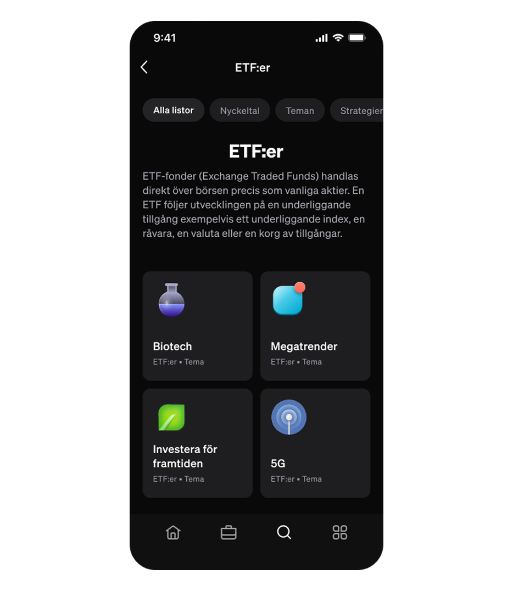

<div class="grid-container" data-bg-color="linear-gradient(315deg, #393261, #866FAC 33%, #C0AEF7 67%, #866FAC 100%)">
    <div class="sticky-header">
        
        <div class="nav-blur-step-1"></div>
        <div class="nav-blur-step-2"></div>
        <div class="nav-blur-step-3"></div>
        <div class="nav-blur-step-4"></div>
        <div class="nav-blur-step-5"></div>
    </div>
    
    
    
</div>